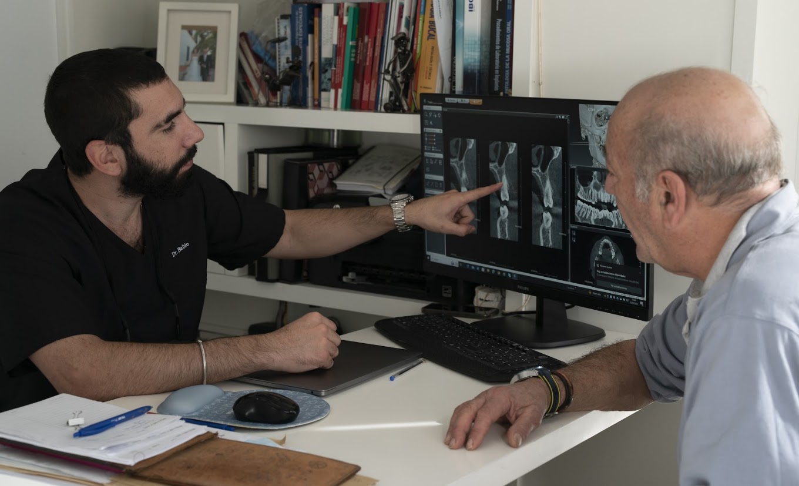

Revisión del caso previo
Estudiamos el tratamiento realizado y el contexto del fracaso o de la complicación.
Segunda opinión en Sevilla
Si ya has tenido un implante con problemas o te han dicho que tu caso es complicado, lo primero no es precipitarse: es entender bien qué ha pasado y qué opciones existen a partir de ahí.

Qué hacemos primero
Estudiamos el tratamiento realizado y el contexto del fracaso o de la complicación.
Es clave revisar hueso, encía y estabilidad antes de decidir el siguiente paso.
El objetivo es plantear una solución razonada y realista, no simplemente repetir el mismo esquema.
Casos en los que puede ayudar
Dolor, movilidad, pérdida del implante o dudas importantes sobre cómo continuar.
Cuando el problema no es solo funcional, sino también estético o de confianza en el tratamiento recibido.
Situaciones que requieren un planteamiento más cauteloso y con más criterio clínico.
A veces una segunda opinión evita decisiones apresuradas o poco adaptadas al caso.
Preguntas frecuentes
Depende de por qué falló el anterior y de las condiciones actuales de la zona.
En casos complejos o cuando hay dudas importantes, suele ser una decisión muy razonable.
No necesariamente. A veces el mejor tratamiento requiere fases o tiempos distintos.
Siguiente paso